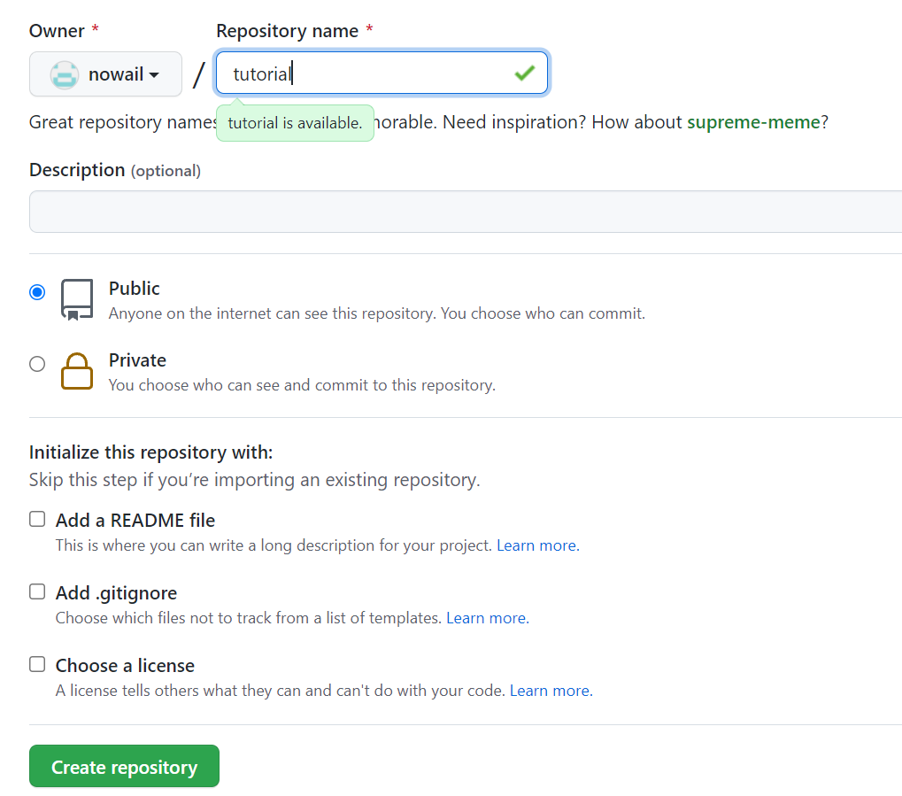
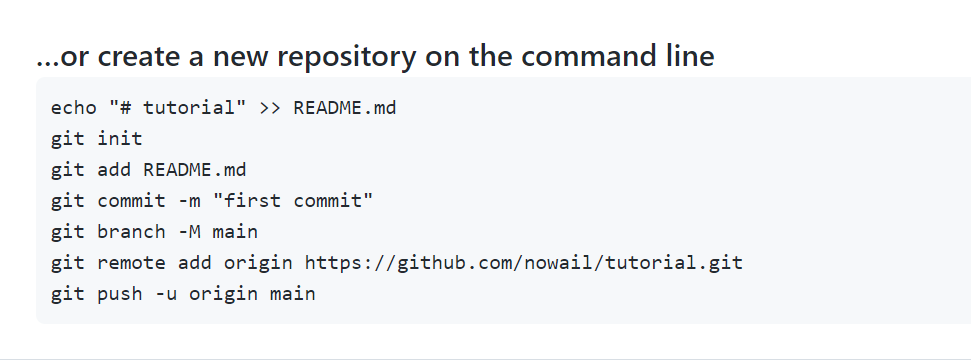
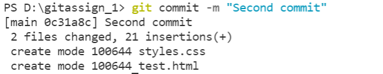
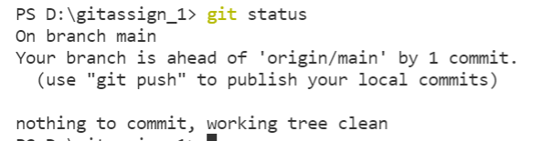
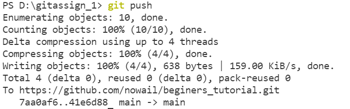
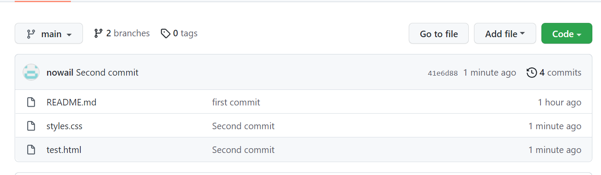

GITHUB TUTORIAL
- create a repository:

- give information of your account and click on create repository:

- now install visual studio code and create a new file by clicking on the highlighted part to wite a code :


- follow the commands below after creating repository by writing them on visual studio code terminal:


- Now to add a file to repository , there are 2 ways :
- by writing the command on terminal by “git add “ command:

- by clicking on “add file “ on brower after creating repository:

- you can observe changes by “git commit” command:

- you can check status by “git status “ command”:

- Changes can be pushed to the server by “git push” command:

- view of repository after push:

- now if you have made changes at local repository then to synchronize results at both repositories:
- content of file not changed at web one:

- content of file changed at local one:

- So after the changes made above(after 2nd push) the repository looks like this

- And the view of file :

- . now if you want to edit online(at web repository)and synchronize the results with local one
- so click on the highlighted option to edit and after editing click on commit changes to save the results :


- now the changes at the web repository can be seen:


- now to get changes from github(web repository ) to local one use ”git pull” command: